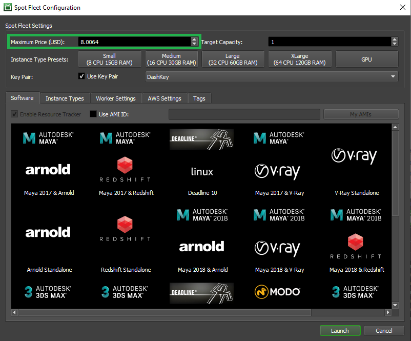
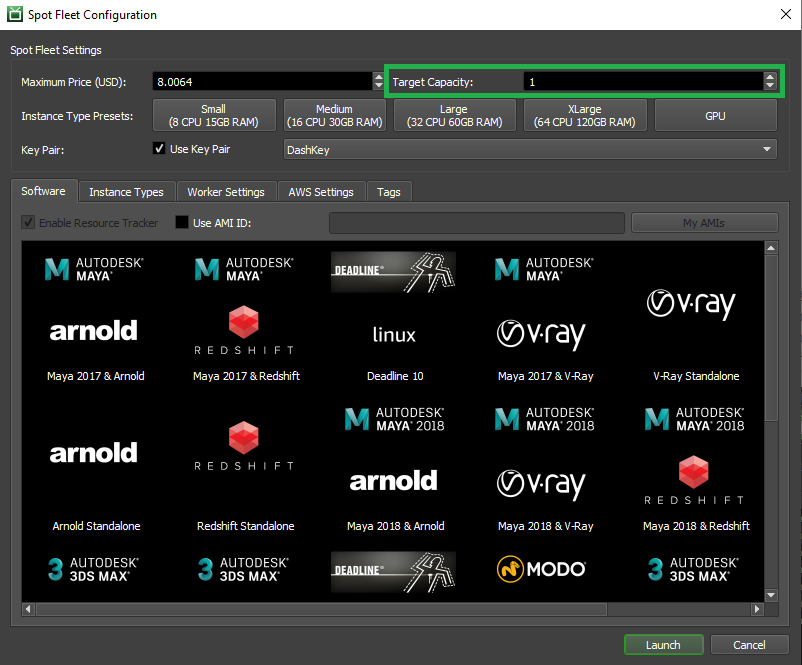
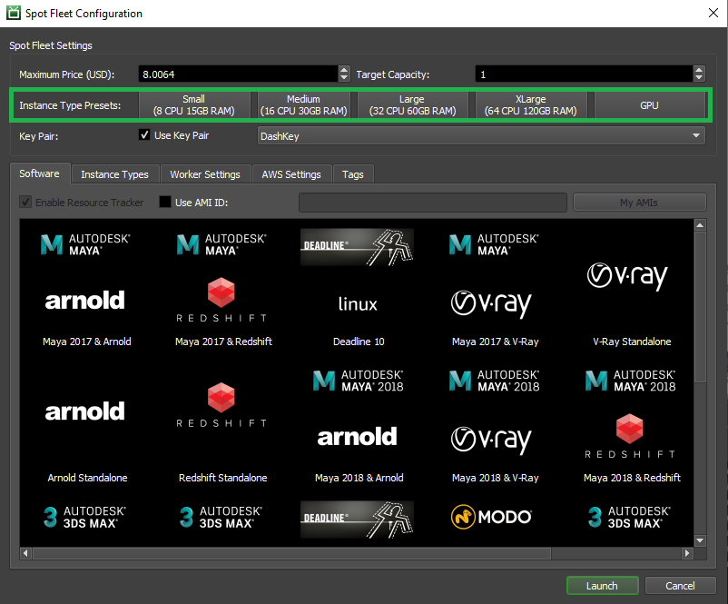
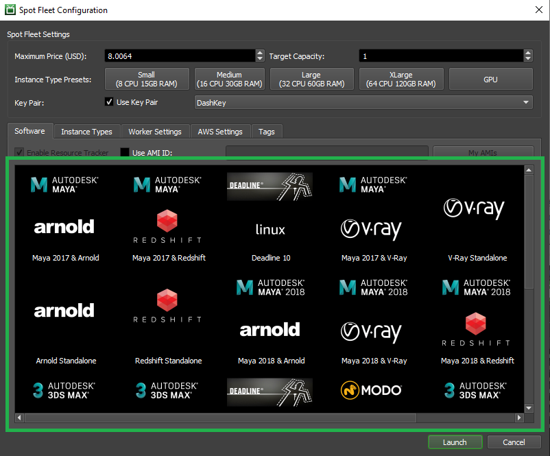

Note
While AWS Portal can enable cloud rendering in Deadline 10, AWS Deadline Cloud is a newer offering that has been built specifically for the cloud. It is a fully managed service that does not require installation or maintenance of infrastructure (e.g., repository, database, or license server). Worker fleet auto-scaling, asset synching, and licensing are all managed natively within AWS by Deadline Cloud. See here for more information on Deadline Cloud and its capabilities.
4. Spot Fleet Launch Instructions¶
4.1. Overview¶
This page will walk you through the steps to launch a Spot Fleet with AWS Portal. It will go through the process of opening the Spot Fleet Configuration dialog and the process of configuring your Spot Fleet.
You can find more information about AWS Portal in general here.
Note
You will need a running instance of the Deadline Remote Connection Server to launch a Spot Fleet. You can find more information on the Deadline RCS here.
Note
You will need to have a working Deadline AWS Portal infrastructure running in order to launch a Spot Fleet. You can find more information on AWS Portal infrastructures and launching them here
4.2. Open Spot Fleet Configuration Dialog¶
To create a Spot Fleet with Render Nodes:
Right click on the infrastructure you want to create the Spot Fleet with.
Select ‘Start Spot Fleet’ and wait for the Spot Fleet Configuration Dialog to appear.
Note
Before the dialog is displayed, Deadline will perform some system checks to ensure AWS Portal Link and AWS Asset Server have been configured properly.
4.3. Spot Fleet Configuration Dialog Usage¶
The Spot Fleet Configuration dialog is where you will adjust all the settings for your Spot Fleet that will contain your Deadline render nodes. A detailed description of the dialog and it’s various components can be found here.
Set the max instance price you want for your Spot Fleet instances. More information on Spot instance pricing can be found here.
Set your Target Capacity. This is the number of Render Nodes you want your Spot Fleet to have.
Note
Deadline AWS Portal currently only supports 500 instances per Spot Fleet. If you are interested in starting more than 500 instances or multiple Spot Fleets with a cumulative instance count greater than 500, please contact Thinkbox Support.
Warning
If you intend to use more than 20 Spot instances on AWS EC2, you will need to submit an AWS service limit request. Please ensure you allow adequate time to submit your service limit request prior to large scale rendering via AWS Portal!
Select the instance type preset you want your instances to be. More information on the instance types preset can be found here.
Advanced
You can have fine grain control of your which instance types you want in your fleet by using the Instance Types tab. You can find a detailed description of that tab here.
Select the Key Pair you would like to use if you want to access your Spot Fleet instances through SSH. We recommend leaving the default selection of DashKey. You can learn more about SSH keys and the DashKey here.
Select the software suite that you like to be installed onto your Spot Fleet instances. You can learn more about the available software on AWS Portal here. If the software you want isn’t in this list, you can create your own custom AMI. More information on creating custom AMIs can be found here.
Note
You can only select one software package to be installed per Spot Fleet, but it is possible to start multiple Spot Fleets per infrastructure with different software packages.
Advanced
Check the Use AMI ID and provide a custom AMI ID to install into your instances instead of one of our pre-built AMIs. You can learn more about custom AMIs and their creation here
Optionally (Advanced), you can adjust the Worker settings for your render nodes in the Worker Settings tab. Detailed information about those settings can be found here.
Optionally (Advanced), you can adjust any AWS specific settings in the AWS Settings tab. Detailed information about those settings and the tab can be found here.
Optionally (Advanced), you can set AWS Tags on your render nodes using the Tags tab. You can find a detailed description of the Tags tab and more information AWS Tags here.
Review your settings and then click the ‘Launch button’ to begin initialization of your Spot Fleet.

Note
It may take a small amount of time before your Spot Fleet shows up in the AWS Portal Panel after you have clicked ‘Launch’ and the Spot Fleet Configuration Dialog has closed.
4.4. Completed¶
Once your Spot Fleet request has been fulfilled, you are ready to start rendering with Deadline AWS Portal!
Note
It may take a little bit of time before your Deadline Workers show up in the Worker List Panel.
4.5. Next Steps¶
If your fleet of render nodes failed to be created or you are running into issues when trying to render with AWS Portal, please take a look at our Troubleshooting AWS Portal page.